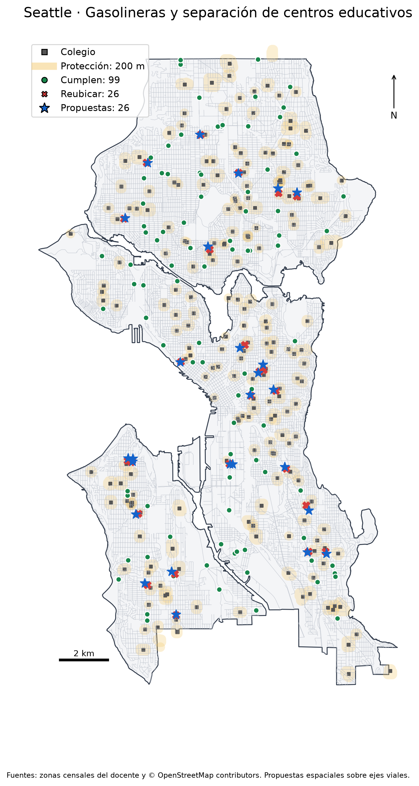

Mapa interactivo
Verde: estaciones que cumplen. Rojo: estaciones que requieren traslado. Azul: ubicaciones propuestas. Las capas pueden activarse desde el mapa.
Mapa de resultados

Evaluación espacial de la separación entre gasolineras y centros educativos, considerando una distancia mínima de 200 metros y ubicaciones alternativas sobre la red vial seleccionada.
José Bautista Janampa · Introducción a Datos Espaciales
Verde: estaciones que cumplen. Rojo: estaciones que requieren traslado. Azul: ubicaciones propuestas. Las capas pueden activarse desde el mapa.
